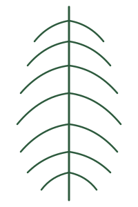

Asset Preview
Alle SVG's klaar voor gebruik in Cursor
Logo (4 varianten)

logo/logo-horizontal.svg

logo/logo-icon.svg

logo/logo-horizontal-light.svg
Functionele iconen

check-circle.svg

heart.svg

calendar.svg

envelope.svg

ornament-left.svg

ornament-right.svg
Decoratieve elementen

hibiscus-large.svg

hibiscus-small.svg

palm-frond-long.svg

palm-fan.svg
Benefit iconen (de 4 cirkels in de hero)

benefit-coconut.svg

benefit-almond.svg

benefit-natural.svg

benefit-no-sugar.svg
Ingrediënt illustraties (alternatief voor foto's)

kokosmelk.svg

kokoscreme.svg

amandeldrink.svg

verse-kokos.svg

dadelsiroop.svg

amandel.svg

rozenwater.svg

aromas.svg
Social

tiktok.svg
Let op: De ingrediënt-illustraties zijn een tussenoplossing als je nog geen fotografie hebt. Voor de finale website raad ik echte foto's aan (warm licht, transparante achtergrond) — die matchen beter met de premium uitstraling van het origineel. Voor andere assets (logo, iconen, decoratie) zijn deze SVG's wel definitief bruikbaar.